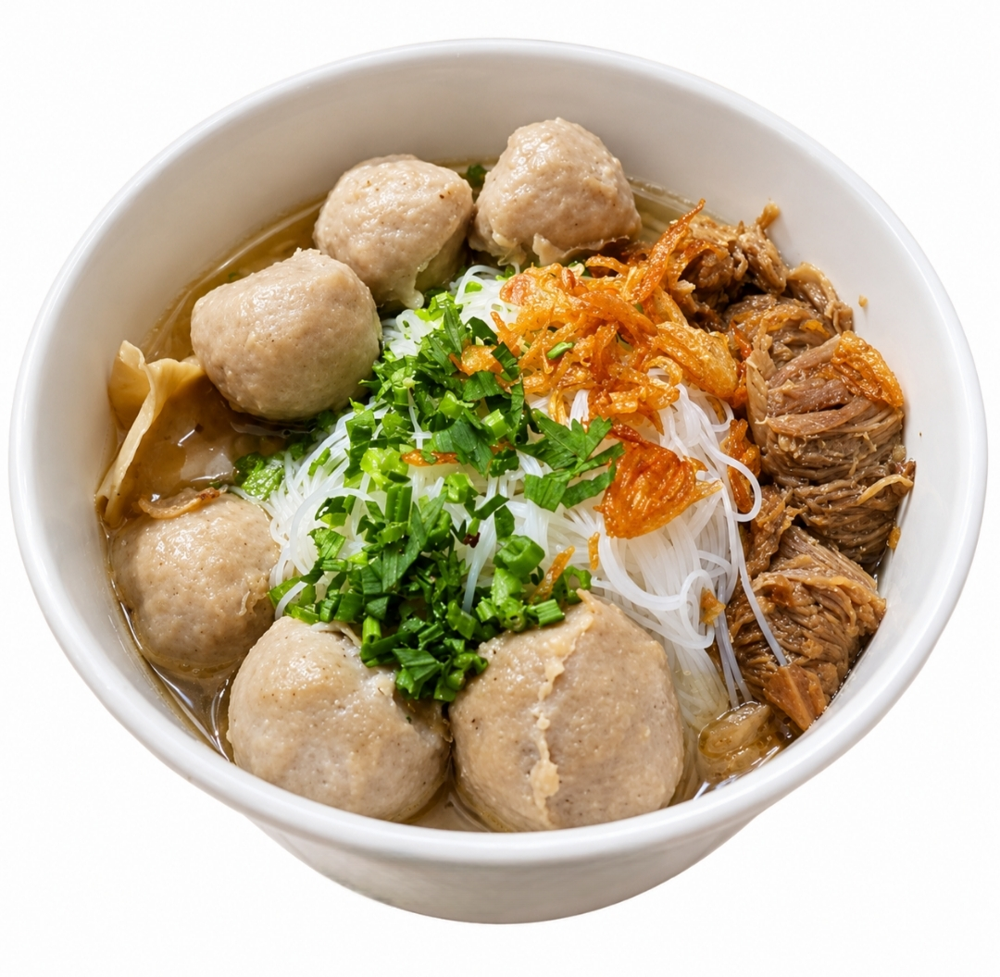
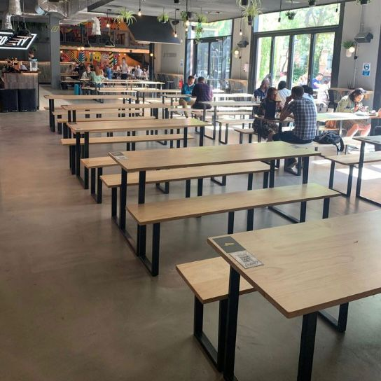

KISAH KAMI
BASORIA adalah sebuah brand bisnis bakso yang mengusung slogan "Rasa Juara di Setiap Mangkok", menghadirkan makna lebih dari sekadar makanan. Di Indonesia, bakso bukan hanya hidangan sehari-hari, melainkan makanan rakyat yang bisa dinikmati oleh semua kalangan, dari anak kecil hingga orang dewasa.
Ia menjadi simbol kehangatan karena selalu disajikan panas, mampu menghangatkan tubuh sekaligus suasana, serta menjadi comfort food yang menghadirkan rasa nyaman seperti pulang ke rumah.
Dengan begitu, BASORIA bukan hanya tentang bakso, tetapi tentang pengalaman rasa, kehangatan, dan kualitas yang menyatu dalam setiap sajian. Serta pintu yang terbuka untuk semua orang.
NILAI UTAMA KAMI
Dari nilai-nilai tersebut, BASORIA membawa tiga inti utama dalam identitasnya yang membedakan kami dari yang lain.
Komitmen untuk selalu memberikan kualitas terbaik dengan standar rasa yang konsisten di setiap mangkok.
Ketulusan dalam melayani pelanggan — pengalaman makan yang bukan hanya lezat, tetapi juga penuh perhatian.
Mengangkat bakso sebagai makanan semua orang, disajikan dengan sentuhan kualitas, kebanggaan, dan kelas yang lebih tinggi.

KOMITMEN KAMI
Daging sapi segar dipilih setiap hari untuk menghasilkan bakso yang kenyal dan gurih.
Kuah kaldu dimasak lama dengan rempah pilihan untuk rasa yang dalam dan autentik.
Mulai Rp 15.000 — kualitas premium tanpa harus merogoh kocek dalam.